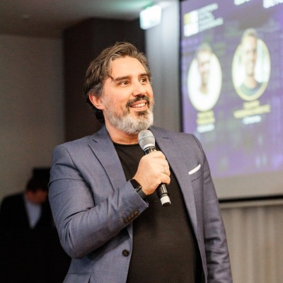

KCD & OpenInfra Days Vietnam 2026
Watts Matter
$ kubectl get watts --all-namespaces
Power- and carbon-aware scheduling for the AI-era data center.
Open with energy. Do not read the title out loud. The prompt line does the joke for you — let the room read it.
Straight into the ladder. The first substantive thing out of your mouth should be a unit, not a thank-you.
What is a watt?
1 W = 1 joule / second. A rate, not an amount. Energy is what you pay for. Power is what the breaker, the feed and the thermals cap right now.
Nine orders of magnitude from a light bulb to an AI campus — and the feed into your building is fixed.
Log scale. Bar length is log₁₀ of the rate, normalised to 1 GW.
~50 seconds. Ground the room in the unit before anything else. A watt is a rate — joules per second. Energy (joules, kWh) is the bill; power (watts) is the constraint: breaker, feed and thermal limit cap the rate right now.
Walk the ladder fast, one click per rung: bulb 1 W, your brain 20 W — flag that number, you come back to it on the next slide — H100 700 W, server 10 kW, rack 40 kW, gigawatt campuses.
"Nine orders of magnitude. And the one number you cannot change this quarter is the feed into your building."
What is intelligence? Ask a physicist.
Turning energy into ordered information. Which makes it a thermodynamic process, with a price floor — and a very long way above it.
kT · ln 2 ≈ 3 × 10⁻²¹ J
Landauer, 1961
- The minimum cost of erasing one bit
- Every token your cluster emits has a thermodynamic price floor
- Today's inference runs many orders of magnitude above it
20 W vs 700 W
human brain vs NVIDIA H100
- The best-known intelligence runs on twenty watts
- We are nowhere near any physical limit
- The headroom is the whole opportunity
Efficiency isn't blocked by physics. It's blocked by engineering — and engineering is our job.
~60 seconds. Intelligence = turning energy into ordered information. Computation has a price floor: Landauer 1961, kT ln 2 per bit erased, roughly 3 × 10⁻²¹ J at room temperature.
Do not overclaim a number here. Inference runs many orders of magnitude above that floor — the point is headroom, not a precise multiple. If a physicist in the room pushes, concede the imprecision immediately and keep the direction.
"The best-known intelligence we have runs on twenty watts. An H100 is seven hundred. Physics is not the blocker. Engineering is — and engineering is our job."
What is a token?
The unit of machine thought-flow: about three-quarters of a word — and every one of them is a full forward pass through the model.
- The refinery equipment
- Bought once, at training time (capex)
- Sit in HBM: potential energy
- The product coming off the line
- Paid per unit, at inference time (opex)
- Each one spends joules: kinetic energy
Nobody buys tokens — they buy outcomes. Reasoning models burn 10–100× more tokens per answer, so tokens/watt is the proxy we can meter and joules per answer is the objective.
~55 seconds. A token is roughly three-quarters of an English word, and generating each one is a full forward pass.
Parameters are stored structure — bought once at training, sitting in HBM, potential energy. Tokens are flow — paid per unit at inference, joules each. This is also why MoE and quantization work: fewer active parameters moved per token.
Then the caveat, and do not skip it: nobody buys tokens, they buy outcomes. Reasoning models burn 10–100× more tokens per answer. Tokens per watt is the proxy we can meter; joules per answer is the thing we actually want.
Fix the sentence — "Tokens are the new oil."
Tokens are the gasoline.
Watts are the crude.
Your scheduler is the refinery.
Tokens are the commodity — 140 trillion a day in China alone. But the analogy is backwards: oil is an input, scarce and extracted. Tokens are an output, manufactured. Huang's own framing agrees — raw material in is data and electricity.
"Tokens are the gasoline. Watts are the crude. And your scheduler is the refinery — which is the part nobody is tuning."
Interaction beat, do it here: show of hands — who runs GPUs? Keep the hands up: who knows what their busiest pod draws in watts? The second question kills almost every hand in the room. That silence is the talk.
The margin squeeze
This is a commercial argument, not a sustainability one. Two curves you don't control, moving in opposite directions.
Token pricesRoughly every three months. GPU capex is already sunk — the one marginal cost you still control is energy.
To upgrade a power feedIf the utility says yes at all. Singapore said no for years.
Shapes, not forecasts. IEA: data centers reach ~945 TWh by 2030 — twice 2024, more than Japan consumes today.
Commercial framing, not sustainability. This is the slide that makes a CFO care, and it is the reason the rest of the talk gets funded.
Token revenue halves roughly every quarter — a curve you do not control. GPU capex is sunk. The one marginal cost you still control is energy. And on the other side there is a hard ceiling: the power feed, twelve to eighteen months to upgrade, assuming the utility says yes. Singapore said no for years.
"Between a price that halves and a feed that doesn't grow sits exactly one lever: how efficiently you turn watts into tokens."
Be scrupulous: the curves are shapes, not forecasts. The only hard number on the slide is the IEA one.
The scheduler is blind to all of it
Two views of the same machine, and only one of them is wired into admission decisions.
- cpu · memory
- Fungible abstractions, designed in 2015
- Additive, per-node, time-invariant
- watts · heat · price · carbon
- Shared caps, time-varying, physical
- Overcommit a breaker and it opens
100 W is what an idle H100 draws. 60% of peak power is what a GPU pulls at 30% busy. Low utilization is the most expensive way to run hardware.
The blindness is structural, in three ways. Name all three.
(1) Shared physical cap. CPU and memory are per-node and additive. Watts are shared across a rack behind one breaker — overcommit it and it opens, and every node behind it goes down at once. The scheduler has no concept for this.
(2) Time. Spot prices swing three to ten times daily. Vietnam's hydro seasonality moves the grid mix across the year. A scheduler decision is time-invariant; the cost of it is not.
(3) Non-linear idle floor. An idle H100 still burns ~100 W, and at 30% utilization you are paying ~60% of peak power. So two GPUs at 40% draw more total power than one at 80% doing the same work. Packing is not a rounding error.
The metric your facility can't give you
How efficiently power reaches the servers. Says nothing whatsoever about what the compute does with it. PUE stops at the server intake.
- GPU telemetry
- workload-scheduler visibility
- per-workload power attribution
That's not a facilities problem. That's a Kubernetes problem — and it is solvable with three open-source projects.
PUE is a good metric that answers a different question. It stops at the server intake: how much of the power drawn from the grid reaches the machines. A perfect 1.0 tells you nothing about whether the GPUs behind it are idle.
Tokens per watt measures the compute layer, and it needs exactly three things: GPU telemetry, scheduler visibility, and per-workload power attribution. Read that list back and land the line — that list is a Kubernetes problem, which is why this is a KCD talk and not a facilities talk.
Say explicitly that PUE and tokens/watt are complements. Someone in this room owns a PUE number and you are not attacking it.
Measure
You cannot schedule what you cannot see. Watts per pod, exported like any other metric.
Three moves in this talk: measure, shift, pack. Say all three now so the room has the map, then take them in order.
First, measure. And be blunt that this move alone — changing nothing else — is where most teams find their first double-digit win.
Measure: Kepler
Kubernetes Efficient Power Level Exporter · CNCF sandbox since 2023 · deploys as a DaemonSet with a Helm chart.
Hardware meters
RAPL · DCGM · IPMI
Attribution
power → processes
Aggregation
processes → pods
Prometheus
metrics + Grafana
rate(kepler_container_joules_total) × tariff
= showback in your own currency, per team, with no new billing system.
Caveat, say it now: cloud VMs usually lack RAPL, so you get an estimation fallback. Full fidelity is on bare metal — which is what this room runs.
Kepler reads hardware power meters — RAPL for CPU and DRAM, DCGM for GPUs, IPMI for the platform — attributes power to processes, rolls those up to pods, and exports Prometheus metrics. Deployment is a DaemonSet and a Helm chart. That is the whole install story.
Say the caveat here, not in the Q&A. Cloud VMs generally do not expose RAPL, so you fall back to estimation. Bare metal gives full fidelity — and an OpenInfra room is disproportionately bare metal, so this is good news for them specifically.
The multiplication line is the one people write down: joules rate times tariff equals showback per team, in dong or dollars.
What visibility looks like
sum(rate(kepler_container_joules_total[5m])) by (namespace)
Illustrative shape — replace with a live capture from your own cluster before you present this.
Point at the panel, do not narrate the query. Watts per namespace, live. Multiply by tariff and it is showback per team.
Then point at the red band specifically: notebooks, flat, nine hundred watts, right through the night. Nobody is looking at them. The team whose forgotten notebooks cost thousands a month finds the scale-to-zero button within a week of seeing this panel.
"This dashboard changes organizations faster than any policy document. You don't have to mandate anything — you just have to show people their own number."
Replace this with a real screenshot from your cluster before the talk. A live capture is worth ten times the illustrative version, and the room can tell the difference.
My favourite screenshot
GPU 3 · DCGM_FI_DEV_POWER_USAGE vs DCGM_FI_DEV_GPU_UTIL · 24 hours. This GPU is allocated to a pod.
Burning crude. Refining nothing.
Illustrative shape — replace with a live capture. Yours will look worse.
Slow down. This is the image the room takes home.
State the three facts flatly, in this order: this GPU is allocated to a pod. Utilization: zero. Power: ninety-five watts, flat, all day.
"Burning crude. Refining nothing."
Then one full second of silence. Do not fill it. Do not advance. The silence is what makes them remember it, and you call back to this image on the PACK slide.
Kepler, rewritten · 30.06.2026
News from three weeks ago, and the reason you should look again if you tried Kepler and bounced off it.
- eBPF probes + ML estimation
- Required CAP_BPF + CAP_SYS_ADMIN
- A hard no in multi-tenant clusters
- Estimates spiked away from reality
- Plain /proc and /sys, read-only
- No elevated privileges at all
- Measured node power, attributed by CPU time
- node_cpu_watts tracks IPMI ground truth
They ripped out the fashionable technology because the boring one was more correct. Validated old-vs-new against IPMI at CERN; attribution gap ≈ 0 W at Red Hat.
Old Kepler was clever: eBPF probes plus an ML power model. Two problems. The privileged capabilities were a hard no for anyone running multi-tenant, and the estimates spiked away from reality under load.
The rewrite reads /proc and /sys read-only, needs no privileges, and does proportional attribution of measured node power rather than modelling it. node_cpu_watts tracks IPMI ground truth. Validation came from CERN and Red Hat.
"They ripped out the fashionable technology because the boring one was more correct."
Deliver that line dry and move on. It gets a laugh from exactly the people you want laughing. Source: the CNCF blog, 30 June 2026.
Shift
Batch work needs to finish, not to start at 2 PM. Flexibility is stored value.
Second move: shift. The premise is one sentence — workloads are not equally urgent, and your scheduler currently treats them as if they were.
Everything in this section is stock upstream Kubernetes. Say that early; the room is braced for a vendor pitch.
Power caps and time windows
Two upstream projects, no forks, no custom scheduler. One controls admission against a physical cap; the other controls scale against a signal.
Kueue
quota denominated in watts
- Jobs request watts like any extended resource
- Admission never trips the breaker — by construction
- A cron patch widens the batch envelope at 22:00
KEDA
carbon intensity is just a signal
- Scale backfills up when the grid is clean
- Electricity Maps covers Vietnam
- Swap the metric for a price signal — same pattern
Day tariff / night tariff, commonly a 3× spread. DeepSeek's day-inference, night-training flip was, at its core, a scheduling decision.
Kueue: denominate quota in watts. Worked example — a 40 kW rack, 25 kW to inference, 15 kW to batch; a CronJob patches batch to 30 kW at 22:00. That is time-of-use admission control in about thirty lines of YAML, and the receipt is on the next slide.
KEDA: carbon intensity as a scale signal. Microsoft ships a carbon-aware operator, so this is off-the-shelf, not a research project.
The arithmetic to hold in your head: 100 GPU-hours ≈ 70 kWh at the GPUs, roughly double at the wall. With a 3× day/night spread, that is one third the cost at night. The full version is three slides away.
The DeepSeek line is the credibility anchor — a widely-reported efficiency story that was, underneath, scheduling.
Power as quota: 30 lines of YAML
- Jobs request watts like any extended resource — no scheduler plugin, no fork.
- Admission fits the breaker by construction, not by alerting after the fact.
- A CronJob patches nominalQuota to 30000 at 22:00 — that is the entire night-window mechanism.
time-of-use admission control · stock Kueue · composes with PyTorchJob, JobSet, anything
apiVersion: kueue.x-k8s.io/v1beta1 kind: ClusterQueue metadata: name: batch-power-capped spec: resourceGroups: - coveredResources: - nvidia.com/gpu - power.acme.io/watts flavors: - name: gpu-nodes resources: - name: nvidia.com/gpu nominalQuota: 16 - name: power.acme.io/watts nominalQuota: 15000 # daytime envelope
Give them the receipt, but read nothing aloud. Point at three lines only.
One: coveredResources includes a watts extended resource alongside the GPU. Two: nominalQuota: 15000 — that is the daytime envelope, fifteen kilowatts. Three: jobs request watts exactly the way they request GPUs.
Then the mechanism in one sentence: a CronJob patches that number to 30000 at 22:00, and the night window exists.
"Stock Kueue. No forks, no custom scheduler. It composes with PyTorchJob, JobSet, whatever you already run."
Full manifests are in the repo — point at the QR on the closing slide rather than reading YAML at people.
Carbon is just a signal: KEDA
- min 0 / max 20 — scale to zero when the grid is dirty.
- The query inverts carbon intensity, so cleaner grid means bigger number means more replicas.
- avg_over_time[30m] smooths the signal; cooldownPeriod stops the accordion.
grid gCO₂/kWh from Electricity Maps · Vietnam is covered · swap the metric for a price signal
apiVersion: keda.sh/v1alpha1 kind: ScaledObject metadata: name: backfill-carbon-aware spec: scaleTargetRef: name: embedding-backfill minReplicaCount: 0 maxReplicaCount: 20 cooldownPeriod: 600 triggers: - type: prometheus metadata: query: 400 - avg_over_time(grid_co2_g_kwh[30m]) threshold: "100"
Second receipt. Same discipline — point, don't read.
Point at minReplicaCount: 0 and max: 20 — scale to zero when the grid is dirty. Then the query: it subtracts carbon intensity from a constant, so a cleaner grid produces a bigger number and more replicas. Then avg_over_time[30m] is the smoothing and cooldownPeriod: 600 is the anti-flap.
Mention Microsoft's carbon-aware-keda-operator for people who want zero assembly.
"The same pattern works for a price signal. Swap the metric, keep the shape. Carbon and money point the same direction more often than people expect."
The arithmetic of when
100 GPU-hours × 700 W
× ~2 for host power and cooling
the cost, at a 3× day/night spread
Nothing about the job changed. Only when.
Slow down here — this is the slide people repeat to their manager. One click per box.
100 GPU-hours at 700 W is 70 kWh at the GPUs. Roughly double that at the wall once you count host power and cooling — call it 140. With a 3× day/night spread, which is common on spot markets, the identical job at two in the morning costs a third.
"Nothing about the job changed. Only when."
Pause after that line. It is the thesis of the whole SHIFT section compressed into six words.
Pack
Every point of tokens per watt is capacity you sell without touching the power feed.
Third move: pack. This is where the capacity actually is, and where a provider in this room makes money in weeks rather than the twelve to eighteen months a feed upgrade takes.
Real-world GPU utilization
reported across multiple vendors
Pack: tokens per watt
Four levers, in order of effort. The first one is free and you can do it on Monday.
Two GPUs at 40% draw more total power than one at 80% doing the same work. You pay full price — in dollars and in watts — for part-time refining.
Industry numbers from multiple vendors put real GPU utilization between 10 and 40 percent. Not a strawman — that is the reported middle of the market.
The physical fact underneath: two GPUs at 40% draw more total watts than one at 80% for the same work, because of the idle floor. So packing is not hygiene, it is capacity.
Callback: when you reveal the first lever, point back at the flatline. "That GPU. That is lever one, and it costs you nothing."
For the providers in the room: tokens/watt gains are sellable capacity in weeks. A feed upgrade is twelve to eighteen months and a conversation with a utility. Say that explicitly — it is the commercial close of the technical half.
How this bites you
Three ways power-aware scheduling goes wrong. Learn them here, not in production.
Thermal throttling
Packing concentrates heat. A throttled GPU pays full power for reduced throughput — the exact anti-goal.
watch DCGM temp + throttle reasons · hot chassis positions are placement signals
Queue starvation
Tight envelopes plus long queues starve low-priority jobs forever, and nobody notices until someone complains.
Kueue priorities · alert on pending-workload age
Oscillation
Noisy carbon and price signals make the cluster breathe like an accordion, and you pay for every cold start.
smooth over 30 min · cooldowns · hysteresis (up <250, down >350)
These three are your practitioner credibility. A talk that only lists wins is a vendor talk.
One minute, three modes. This slide is why they trust the previous fifteen.
Throttling is the anti-goal made concrete: full power, less throughput. It is the one failure that makes your tokens/watt number worse while looking like success on a utilization dashboard.
Starvation is a capacity conversation backed by data — when low-priority work never lands, that is your evidence for more capacity, not a reason to abandon the envelope.
Oscillation: smooth, cooldown, hysteresis. Give the actual asymmetric thresholds — it signals you have run this.
This needs you — specifically you
Two doors, both open today, both wanting exactly the people in this room.
That is this room
- GPU power monitoring is still behind an experimental flag
- Maintainers are asking for end users running real AI/ML workloads to validate it
- Also wanted: VM power-model training · accuracy validation against IPMI
Come say hi, I'll walk you in
ocgroups.dev/cncf/group/env · #tcg-environmental-sustainability
- CNCF's sustainability group, rebooted as a Technical Community Group
- Open to everyone, twice a month, EMEA/APAC-friendly slot
- I served as its tech lead
Cloud Native Sustainability Month, the group's global event series, runs yearly. Your KCD talk could be next.
~30 seconds, and make it personal. The Kepler team explicitly asked for AI/ML end users to test the experimental GPU power monitoring flag. Land it: "that is this room."
Then the community door. The Environmental Sustainability group, formerly a TAG, rebooted as a TCG on Open Community Groups, meets twice a month with a slot that genuinely works from Hanoi — say that, because the usual objection is timezone.
Say that you were its tech lead. It is credibility and an invitation in the same sentence, and it is the difference between a link on a slide and someone actually showing up.
Monday morning
Four weeks, in order, each one shippable on its own. Do not do them in parallel.
-
Week 1
Deploy Kepler. Measure.
Change nothing else. Let the dashboard do the politics for you.
-
Week 2
Reclaim the idle GPUs
Free capacity, zero risk, and the fastest number you will ever report upward.
-
Week 3
Cap batch in watts
A power-denominated Kueue quota plus a night window via a CronJob patch.
-
Week 4
Wire a carbon signal into KEDA
Smooth it over 30 minutes. Add cooldowns. Add hysteresis. Then leave it alone.
The close starts here. Read the four weeks quickly — the value is that it is short, ordered, and obviously doable.
Emphasise week 1: change nothing. The most common failure is a team that deploys Kepler and immediately starts capping things, then cannot tell which change did what.
"Token prices keep halving. The power feed will not grow. Between those two curves sits your scheduler — blind today, teachable this week."
Tokens are the product.
Watts are the crude.
Go tune your refinery.
Manifests, dashboards and the full Kueue and KEDA examples are in the repo. Take them, break them, send a PR.
Cảm ơn các bạn rất nhiều!

Alessandro Vozza Lovelace EngineeringGolden Kubestronaut
Amsterdam · @ams0
Land the triple, pause, then thank them in Vietnamese. Practise the phrase out loud beforehand — say it once, cleanly, and do not apologise for the accent.
"Tokens are the product. Watts are the crude. Go tune your refinery."
Before you present: replace the repo link with a real QR code. Nobody types a URL off a slide in a conference hall.
Leave this slide up for the whole Q&A. It is the only slide anyone photographs.
Sources and further reading
- Landauer, IBM J. Res. Dev., 1961Irreversibility and heat generation in the computing process — the kT ln 2 floor.
- Kepler — sustainable-computing.ioCNCF sandbox since 2023. DaemonSet + Helm chart; RAPL, DCGM, IPMI.
- CNCF blog, 30 June 2026The Kepler rewrite: /proc and /sys over eBPF+ML; IPMI validation at CERN and Red Hat.
- Kueue — kueue.sigs.k8s.ioClusterQueue, extended resources, nominalQuota. Kubernetes SIG project.
- KEDA — keda.shScaledObject, Prometheus trigger, scale-to-zero. Plus Microsoft's carbon-aware-keda-operator.
- Electricity MapsGrid carbon intensity in gCO₂/kWh. Vietnam is covered.
- IEA, Energy and AI, 2025Data center electricity demand reaching ~945 TWh by 2030.
- NVIDIA GTC 2026 keynoteAI factories: raw material in is data and electricity, product out is tokens.
- NVIDIA DCGM exporterDCGM_FI_DEV_POWER_USAGE, DCGM_FI_DEV_GPU_UTIL, throttle reason fields.
- CNCF Environmental Sustainability TCGocgroups.dev/cncf/group/env · Cloud Native Sustainability Month.
Backup slide. Do not present it. It exists so that when someone asks "where's the 945 TWh from" you press End and point.
Every number spoken in this talk is on this slide or is explicitly flagged as illustrative. Keep it that way as you edit — if you add a figure, add its source here in the same commit.